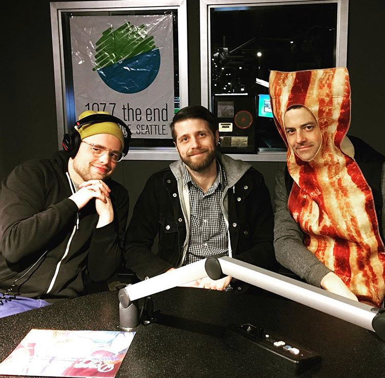
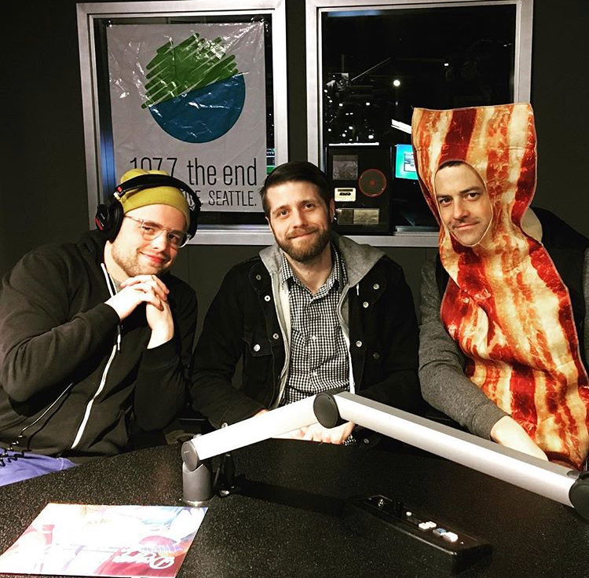
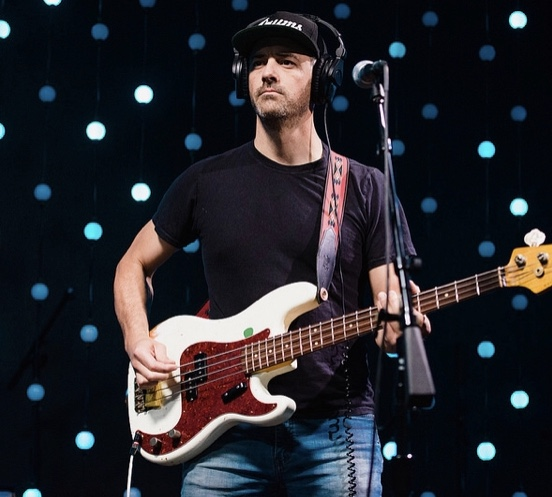

.jpg)
.jpg) 


Hello there. My name is Steve, and I'm an unabashed music lover. I grew up in a household full of music and it has played a significant role in my life since the first time I picked up an instrument. My parents were both music teachers in my small home town. It was such a small school district that I had one of the two of them as a teacher every year from the time I was in first grade until I graduated from high school.
I started off playing brass instruments and spent much of my time learning the trumpet, trombone, tuba and euphonium. My first performance was a sorry rendition of London Bridge Is Falling Down for my fellow 2nd grade classmates. In high school, my dad handed me a dusty Fender Precision bass and asked me to join the jazz band. Shortly after, I got my first upright bass. Throughout high school and college, I participated in numerous ensembles, performing classical music on the euphonium while playing jazz on the bass. I also sang in several choral groups.
After graduating from college, I spent some time performing music aboard a Carnival Cruise Lines ship. It sailed back and forth between Florida and The Bahamas. As a young musician, this was a great way to get paid to have some adventures and work on my musical proficiency as well. More recently, I've had the opportunity to play bass for some great bands, performing at many local venues such as Neumos, the Neptune Theater, the Tractor Tavern, and KEXP.
One of my favorite things about music is the ability to spend time with friends doing something we all love. Since music is more a hobby than a profession, I have the luxury of picking and choosing what gigs I take. I also love the experience of being on tour. Traveling is another passion of mine, and tours provide the opportunity to see the world while performing music with friends. I've had the good forture to be on some great tours throughout the United States and Europe and I hope to do it again in the near future.
I love watching live music. Here are 10 of the best concerts I've seen.
- Radiohead
- Jesca Hoop
- Phosphorescent
- Feist
- Tool
- Robyn
- Fruit Bats
- War On Drugs
- Bon Iver
- Dirty Projectors
Work History
- Carnival Cruise Lines
- AT&T Mobility
- Touring Musician
- Seattle Public Schools
- Premier Events Corp
Education History
- Cashmere High School
- Whitworth University
- Code Fellows